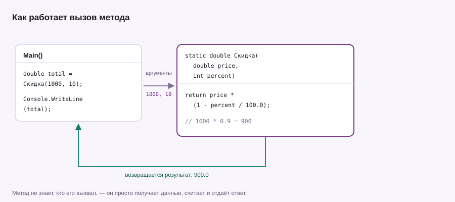

Урок 05 · 18 минут · структура
Методы
Метод — это кусок программы с именем. Написал один раз — вызываешь сколько нужно. Вместо копипасты появляется структура.
Зачем это нужно
Представь, что расчёт скидки понадобился в пяти местах. Скопировать пять раз — плохо: изменишь формулу, придётся править все пять копий и надеяться, что ничего не забыл. Метод решает это одним движением.
PrintHeader();
Console.WriteLine("Кейс «Стартовый» — 100₽");
Console.WriteLine(new string('-', 30));
PrintHeader();
Console.WriteLine("Кейс «Ножевой» — 1100₽");
// локальная функция: объявляется в конце файла, вызывается где угодно
static void PrintHeader()
{
Console.WriteLine("=== КЕЙСЫ CS2 ===");
}Параметры и возвращаемое значение
Метод может принимать данные (параметры) и отдавать результат (return).
double total = Discount(1000, 10);
Console.WriteLine(total); // 900
static double Discount(double price, int percent)
{
return price * (1 - percent / 100.0);
}
Разберём сигнатуру: static double Discount(double price, int percent).
doubleперед именем — тип того, что метод вернёт.Discount— имя, всегда с большой буквы, обычно глагол:Calculate,GetPrice,Print.- В скобках — параметры с типами. При вызове на их место попадают аргументы:
1000и10. returnотдаёт результат и сразу завершает метод.
percent / 100 при целых даст 0: десять делить на сто целочисленно — это ноль. Поэтому в примере написано 100.0 — так деление идёт по правилам double.
void — когда возвращать нечего
SayHello("sneg");
if (IsAdult(17))
{
Console.WriteLine("Можно");
}
static void SayHello(string name)
{
Console.WriteLine($"Привет, {name}!");
}
static bool IsAdult(int age)
{
return age >= 18;
}void означает «ничего не возвращает» — метод просто что-то делает. Такой метод нельзя положить в переменную.
Значения по умолчанию
Параметру можно задать значение, и тогда при вызове его можно не указывать.
PrintPrice(1299.9); // 1299,90 ₽
PrintPrice(1299.9, "$"); // 1299,90 $
PrintPrice(price: 500, currency: "$"); // именованные аргументы
static void PrintPrice(double price, string currency = "₽")
{
Console.WriteLine($"{price:F2} {currency}");
}out — когда нужно вернуть два ответа
Иногда метод должен сообщить и результат, и получилось ли вообще. Так устроен TryParse: возвращает bool, а значение отдаёт через out.
if (TryDivide(10, 4, out double value))
{
Console.WriteLine(value); // 2.5
}
if (!TryDivide(10, 0, out _))
{
Console.WriteLine("На ноль делить нельзя");
}
static bool TryDivide(int a, int b, out double result)
{
if (b == 0)
{
result = 0; // out-параметр обязан быть заполнен при любом выходе
return false;
}
result = (double)a / b;
return true;
}Перегрузка: одно имя, разные параметры
Console.WriteLine(Add(2, 3)); // 5
Console.WriteLine(Add(2.5, 3.5)); // 6
static int Add(int a, int b) => a + b;
static double Add(double a, double b) => a + b;Компилятор сам выбирает подходящую версию по типам аргументов. Запись => выражение — короткая форма метода из одной строки.
Как писать хорошие методы
- Один метод — одна задача. Если в названии появляется «и», пора делить.
- Имя отвечает на вопрос «что делает»:
CalculateTotal, а неData1. - Длиннее двадцати строк — повод присмотреться: скорее всего, внутри спрятаны два метода.
- Метод не должен печатать и считать одновременно: посчитать и вернуть — чище, чем молча напечатать.
Напиши метод Average(int[] numbers), который возвращает среднее арифметическое. И второй метод — PrintLine(char symbol, int length), который печатает линию из символов. Используй оба в одной программе.
Показать решение
int[] marks = { 5, 4, 3, 5, 4 };
PrintLine('=', 24);
Console.WriteLine($"Средний балл: {Average(marks):F2}");
PrintLine('=', 24);
static double Average(int[] numbers)
{
if (numbers.Length == 0)
{
return 0;
}
int sum = 0;
foreach (int n in numbers)
{
sum += n;
}
return (double)sum / numbers.Length;
}
static void PrintLine(char symbol, int length)
{
Console.WriteLine(new string(symbol, length));
}Проверка на пустой массив — не паранойя: деление на ноль элементов уронило бы программу.